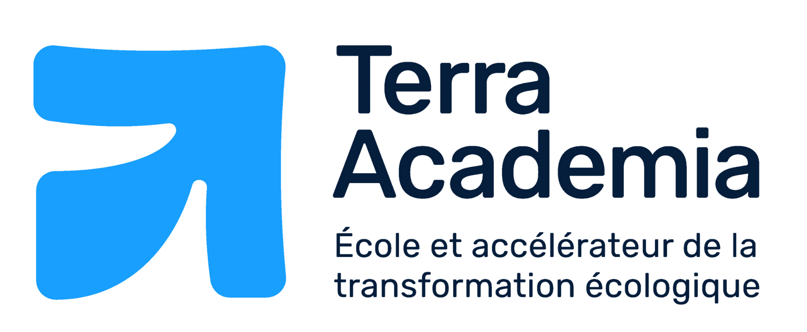
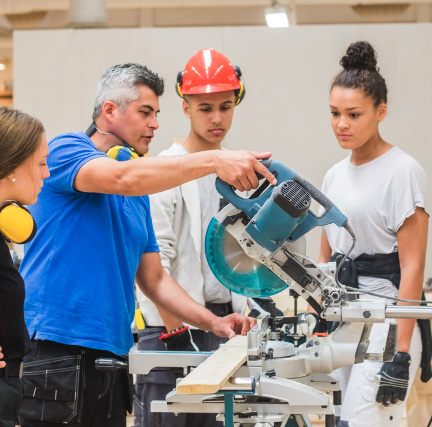

Les
formations
et les
entreprises
de la région engagées pour la transformation écologique seront bientôt disponibles.
Pour en savoir plus, contactez l’équipe de Terra Academia à Arras.
Nous contacter